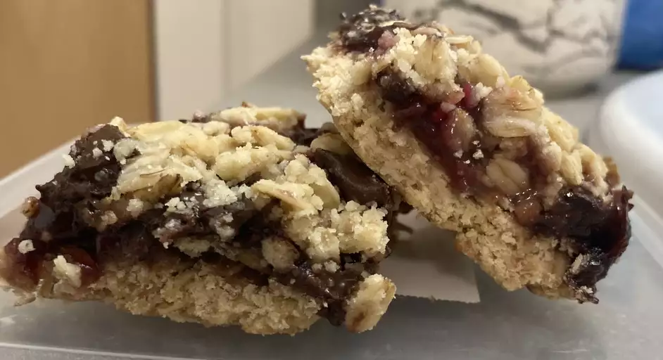

Raspberry Oatmeal Cookie

Description
This oatmeal cookie is one of my favorite cookie bar recipes.
Ingredients
- 1 cup all-purpose flour
- 1 cup rolled oats
- ½ cup packed light brown sugar
- ¼ teaspoon baking soda
- ⅛ teaspoon salt
- ½ cup butter, softened
- ¾ cup seedless raspberry jam
Directions
- Preheat the oven to 350 degrees F (175 degrees C). Grease an 8x8-inch square pan; line with greased foil.
- Combine flour, oats, brown sugar, baking soda, and salt in a large bowl.
Rub in butter using your hands or a pastry blender to form a crumbly mixture.
- Press 2 cups oat mixture into the bottom of the prepared pan.
Spread jam to within 1/4 inch of the edge. Sprinkle remaining crumb mixture on top; press down lightly into jam.
- Bake in the preheated oven until lightly browned, 35 to 40 minutes. Allow to cool before cutting into bars.